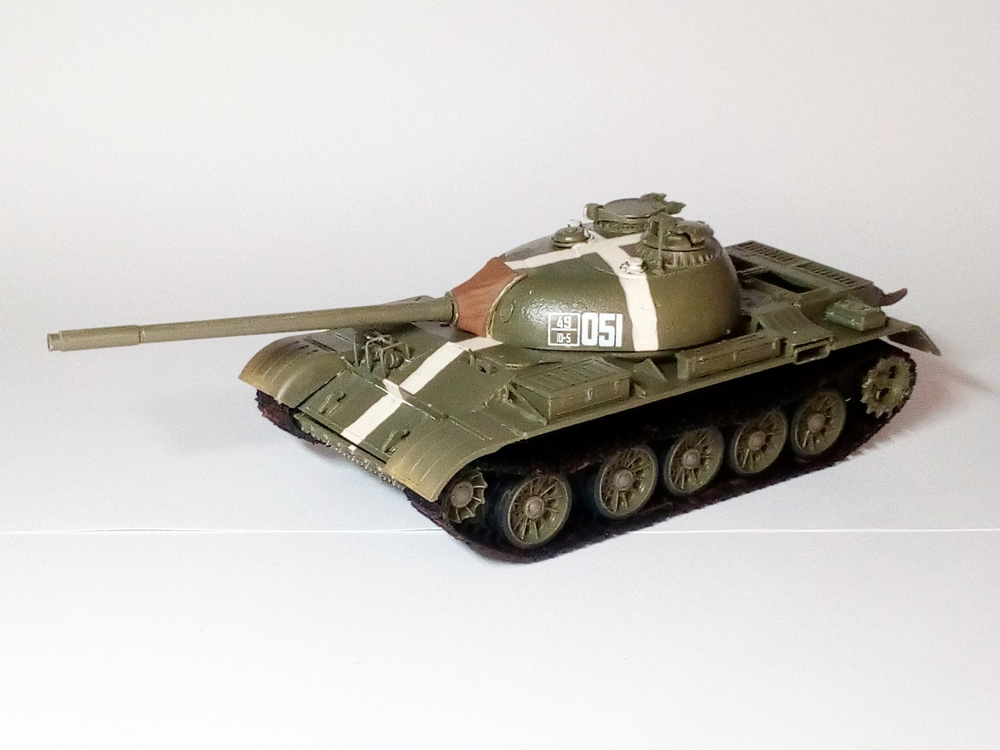

Mezzi militari · scale model archive
T54A Model 1951
T54A Model 1951 — Scale: 1/35. Kit; Trumpeter marking as from soviet Russia invasion of Czechoslovakia Prague 20 August 1968 #1/35 #Trumpeter #T54A

Photo gallery
English description
Kit; Trumpeter
marking as from soviet Russia invasion of Czechoslovakia Prague 20 August 1968
#1/35 #Trumpeter #T54A
Descrizione italiana
marking as da soviet Russia invasion di Czechoslovakia Praga 20 agosto 1968.